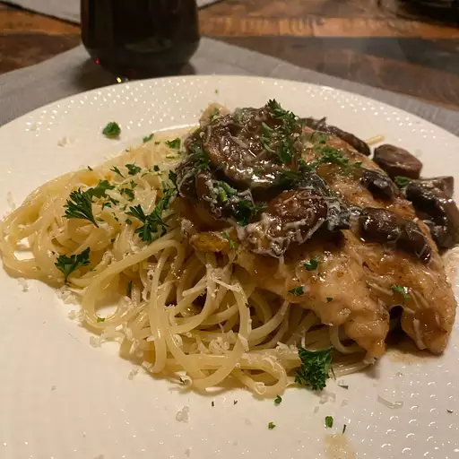

Chicken marsala

A recipe for chicken marsala
Ingredients
- ¼ cup all-purpose flour for coating
- O½ teaspoon salt
- ¼ teaspoon ground black pepper
- ½ teaspoon dried oregano
- 4 medium skinless, boneless chicken breast halves - pounded 1/4 inch thick
- 4 tablespoons butter
- 4 tablespoons olive oil
- 1 cup sliced mushrooms
- ½ cup Marsala wine
- ¼ cup cooking sherry
Steps
- In a shallow dish or bowl, mix together the flour, salt, pepper and oregano. Coat chicken pieces in flour mixture.
- In a large skillet, melt butter in oil over medium heat. Place chicken in the pan, and lightly brown. Turn over chicken pieces, and add mushrooms. Pour in wine and sherry. Cover skillet; simmer chicken 10 minutes, turning once, until no longer pink and juices run clear.